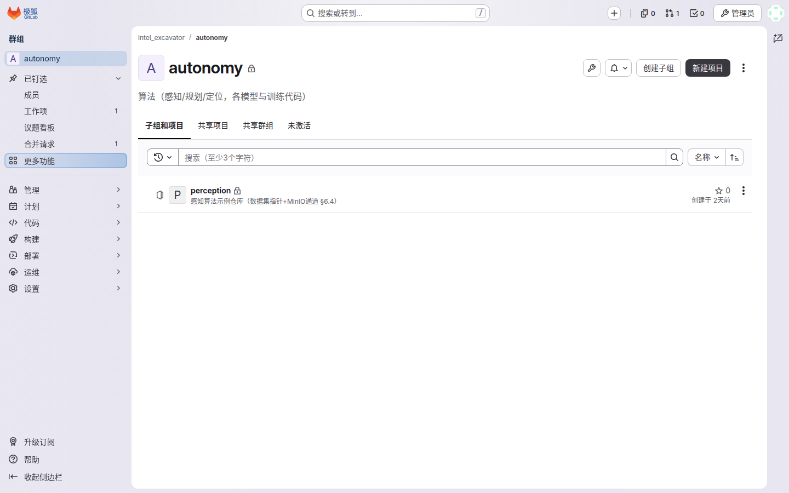
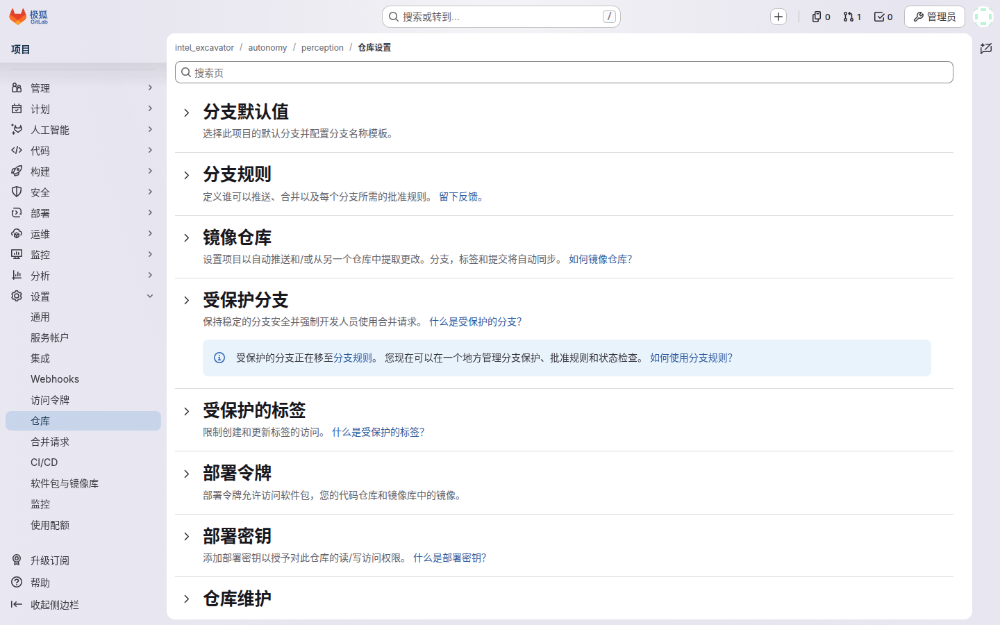
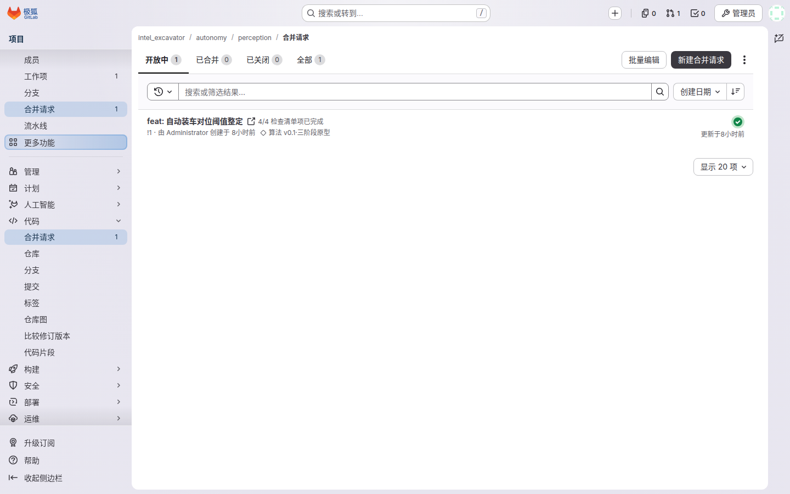
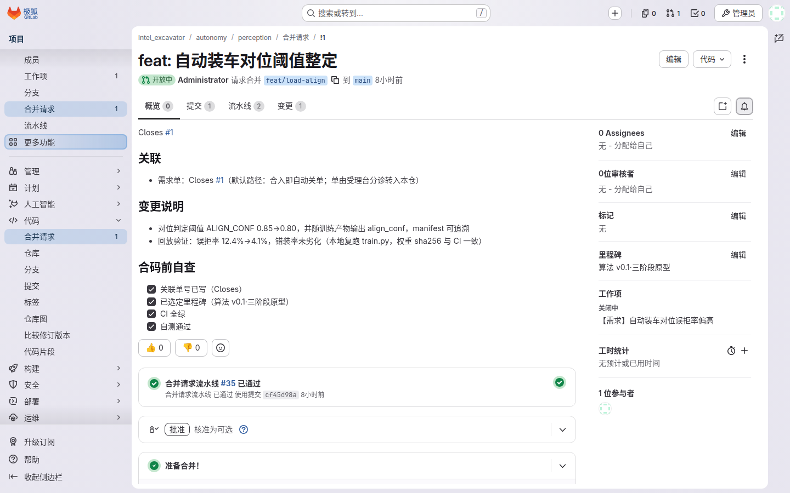
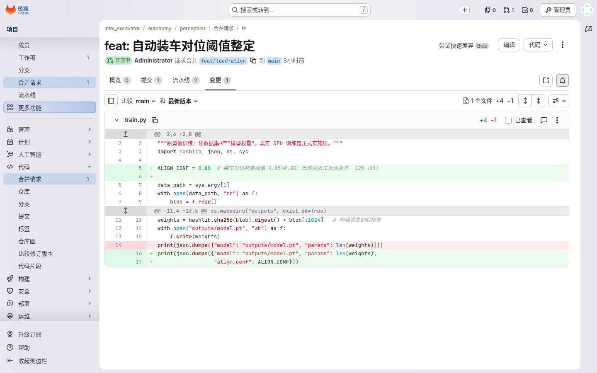
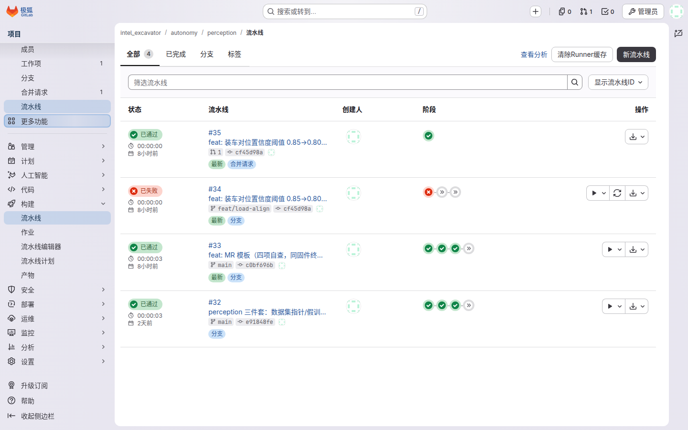

你是本组的开发成员，在 GitLab 里的角色是 Developer：日常就是写代码、提 MR。典型一天：早上拉一把最新代码，从 main 建一条特性分支，改码提交 push，建一个 MR，然后等 CI 跑绿——绿了叫 Owner 来评审合入，红了自己修。
| 能 ✅ | 不能 ❌ |
|---|---|
| push 自己的特性分支 | 直接 push main（系统直接拒绝） |
| 建 MR、评论、修改到通过 | 合入 MR（Owner 做） |
| 触发并查看自己的流水线 | 改保护分支设置、改成员权限 |
从 群组 → intel_excavator 进入你所在的产品域子组（如 autonomy），找到自己的仓库，用页面上给的 clone 地址拉到本地。

$ git clone http://gitlab.internal/intel_excavator/autonomy/perception.git $ cd perception
分支名规则：feat/xxx（新功能）或 fix/xxx（修 bug）。永远不要在 main 上直接改。
$ git checkout main && git pull && git checkout -b feat/load-align
"不能直接 push main"不是口头规矩，而是系统强制：main 是保护分支，push/merge 权限只给了 Maintainer，你以 Developer 身份推上去会被直接拒绝。

这个设置只有 Owner 能改（管理 → 设置 → 仓库 → 受保护分支）。所以别试直推，老实走 MR。
$ git add -A && git commit -m "feat: 装车对位置信度阈值 0.85→0.80" $ git push -u origin feat/load-align
push 完看回显：GitLab 会自动返回一条创建 MR 的链接，直接点它就能建 MR，不用去页面里翻。
左侧 合并请求 → 新建合并请求 建一个新 MR。标题按仓库规范写清这次改了什么；描述里必须写三件事：改了什么、为什么、怎么验证——评审者第一眼看的就是这三行。

描述里再加两件：关联单号（默认写 Closes #单号——合入即自动关单；需外部验收的单只写 #单号 引用，不写 Closes）与选定里程碑。仓库的 MR 模板已带四项自查 checklist：☑ 关联单号 ☑ 里程碑 ☑ CI 全绿 ☑ 自测通过。

MR 页内嵌流水线：每次 push 到这条分支都会自动跑一遍密钥扫描、取数、训练。绿了等评审；红了点开对应 job 看日志，最后几十行通常就是原因。


CI 红了或评审有意见：改完直接 push 新 commit 到同一分支，MR 会自动更新，不需要关掉重建。全绿 + 评审通过后，等 Owner 合入。
remote: GitLab: You are not allowed to push code to protected branches.
→ 说明你在推 main。回到自己的特性分支：git switch -c feat/xxx 再推。
Project 'intel_excavator/platform/ci-templates' not found or access denied → 你对 platform 组无读权限，找平台组给你加 Reporter。
git commit --allow-empty -m "ci: retry" 触发新流水线。注意：retry 不重新解析模板，改模板后必须触发新流水线。